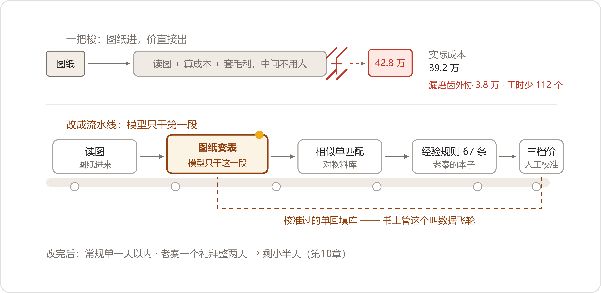

A Quotation
9月9日，邵卫东把报价单的PDF拖进邮件附件，收件人一栏，填的是"隆旺褚科长"。销售部大平面里电话声此起彼伏，就他这一角安静。鼠标在发送键上悬了几秒，才点下去。
报价单一页纸，十二行。型号那一栏没填型号，填的是项目号：FN-26-114，赤峰隆旺矿业东翼皮带线改造，非标减速机，六台。总价在最后一行：八十八万八。
邮件发出四十分钟后，他的手机响了。
"小邵啊。"电话那头是褚科长的声音，背景里有皮带空转的嗡嗡声，"对不住。上午，我们跟常州那边把合同签了。"
邵卫东从椅子上直起来："褚科长，我们的价今天上午刚——"
"你们昨天下午我还在等。"褚科长说，"常州那边，西翼线上跑的就是他们家的箱子，图纸人家手里有底，礼拜一晚上就把价和交期报过来了。矿上改造窗口定死了十月中旬，我一天都等不起。价就不看了。回头备件的活儿，我再找你。"
电话挂了。邵卫东握着手机坐了一阵。隔壁工位正打电话催一台备件的货，嗓门不小，他像没听见。他点开发件箱，那封邮件的发送时间：10点44分；又点开"隆旺"文件夹——上一封邮件，是今年春节的祝福，再上一封，是2023年11月的——两台备件减速机的发货清单。这家客户是他从备件小单一单一单喂出来的，跑了三年，赤峰去了十一趟，春节人家设备科长闺女结婚，他随了六百块钱的礼。
六台，八十八万八。报价单发到客户那头，连打开都没被打开。
这个九月刚开个头，周建海先扔过来一张小单试水，两台备件，常规图，走的还是老路子——老秦半天看完，价也报了，客户没下文。那单没起波澜。起波澜的，是紧跟着来的这一单。
这份报价单，是从9月7日早上十点二十开始做的。褚科长微信发来一套图纸的扫描件，总图一张，部件图五张，零件图十三张，一共十九张。另附两张照片：旧总图上，他用记号笔圈了三处，接口尺寸从1746改到1720，法兰孔从16个改成20个。最后一句："三天，把价和交期给我。"
图纸当天就送到了技术部工艺科。秦克俭，老秦，五十七岁，干工艺三十一年，全公司非标报价的技术评估都从他手上过。他桌上当时压着两张单：一张出口件的会签，一张晋北某矿的紧急评估。隆旺这套图，他当天插空先过了一遍；转天，又搭进去两个钟头。
他看图有自己的顺序：先看图框和明细栏，数清多少件、什么材料；再抽齿轮参数表，中心距、传动比、模数；再核接口尺寸——三处手写的改动，一处一处跟照片对；最后看技术要求那一栏，热处理、精度等级、探伤。十九张里，真正要一个数一个数抠的，七张。
转天轮到核价。内勤贺春玲翻历史台账，翻出2022年给隆旺做过的一单备件，规格差着一档，只能当个锚。采购部那边，锻件的协议价要现问，洛轴的轴承要问到货，磨齿外协要打三个电话，一样一样把数凑齐。这一晚，老秦交出成本底稿；第三天一早，周建海在成本上点了毛利：八十八万八，发出去。从图纸进来到价出去，四十八个钟头。
五个人沾手：邵卫东接图，贺春玲翻账，老秦看图算工艺，采购核料钱，周建海点头。这还是顺的。不顺的时候——去年九月，老秦陪客户在矿上待了三天，回来桌上一摞待评图纸压了七张，最老的一张躺了七天，客户后来连邵卫东的电话都不接了。
报价发出去当天，销售部小会议室。百叶帘没拉开，屋里比外头暗半格。周建海把笔记本翻开，摊在桌上，没拍，声音压得比平时低。
"隆旺这一单，九十万，让一个'三天'咬没了。这个月第二回。"他翻过一页，"我让贺春玲拉了个数。去年一年，非标询价、我们报了价、最后没下单的，二十七张。里头客户明说'你们太慢'、或者头一回追价没追上的，十四张。一张单子按七八十万算——两千来万的盘子。"
他合上本子，看着邵卫东："三年，十一趟赤峰。你说，我还敢让邵卫东再养几个三年？"
邵卫东没接话。周建海也没等他接，抓起内线电话，拨了数字办。
"老陈。销售口的活，我排队排到头了吧？六月三十号验收会，当着董事长，抽一台机器两分钟从头走到尾，那个我服气。报价这一头——你们敢不敢也来一手？"
两天后，会开在数字办小会议室。周建海带着邵卫东、贺春玲来了；方致远也到了，身后跟着个穿工装的老师傅，袖口磨得发白——老秦。他进门挑了个靠门的位子坐下，把一支铅笔在指间转了半圈，没急着开口。
白板右边那块需求清单，前头两行——财务的、售后的——都落了地；潘永年那行"找一个料号"的，没单独立项，让报价里头的物料匹配捎带着办了；"非标报价"这一行，排到了头。小夏站在白板前，手里一页纸。
"挑活的尺子，三条。"她说得很快，"第一条，是不是知识密集的活。看图、拆需求、算工艺、估成本，全在人脑子里，不在系统里，这种活才值得动。第二条，有没有家底。咱们有——贺姐台账里，十年报价单，两千一百四十三张，加上物料协议价和工时定额。第三条，瓶颈明不明。秦师傅一个礼拜里整两天搭在报价上，新单子还在他门口排队——瓶颈就一个人，明摆着。三条全占。清单上排后头那几条，什么车间排班、例会纪要，就是卡在这尺子上，先不做的。"
老秦咳了一声，往椅背上靠了靠。
"我先说丑话。看图的活，我看了三十一年。"他说，"图纸这东西，同一种减速机，十个客户画十个样。有的图框是正经图框，有的是描出来的；技术要求有的写在栏里，有的拿铅笔写在边上。电脑认得这个？"
"单拿一张出来，它认不全。"小夏说，"两千多张老单子喂给它，常见的样子它就认得了。"
"你喂吧。认不出来，正好说明我说得对。"
方致远一直没说话。这会儿他把面前那支笔摆正了，才开口，还是那么个慢劲儿："老秦，不用你信它。你把你那套账摆出来，让它学不动的地方，自己露出来。出了错，错是我们的，账还是你的。"
周建海拍的板，加了两条："第一，贺春玲，每周抽两天，人在数字办；台账、报价单，要哪年导哪年。第二，先说死的——报价数据是销售部的命根子，库搁在销售部内网的机器上，权限贺姐管。价格从我这儿漏出去一个数，我拿什么跟客户谈？"
"应该的。"陈临说，"另外锻件和轴承的协议价，得请潘永年给个口子。"
"我去说。"周建海说，"老潘上回就念叨，他手里的价，一直是销售电话里来问，问一回他查一回。这回正好让他的价有地方使。"
散会时，赵峰端着杯子路过，看了一眼白板上"匹配"两个字，停了停："要跟物料对吧。主数据那点儿家底我可提醒过——华信仨名字，编码对照表在我那儿，拿去用，别自己再攒第二份。"
小夏想一步到位。图纸丢进去，价直接出来——她在白板上给这条路起了个名，叫"一把梭"。
"读图模型咱们六月就有，测试用的那台。前面接图纸，后面接大模型算成本、套毛利，中间不用人管。"她说，"真要能成，邵哥他们拿到图纸，当天就能给客户回价。"
贺春玲花了三天，把2016年以来的报价单一张一张扫出来、导出来，两千一百四十三张进了库。小夏跟了老秦两天，本子记满了小半本，问得最多的一个问题："秦师傅，这张图您先看哪儿？"老秦答一遍，她记一条。后来报价表上的字段排成什么顺序，就是照老秦眼睛走的路排的。
9月16日，数字办，试运行第一关：历史订单回测——给老订单重新报一遍价，跟当年真金白银的账对。贺春玲头天从两千多张里抽了三张，信封封好，带到会上当场拆。周建海、邵卫东都来了，方致远坐在靠窗那头；老秦到得最早，坐在靠里那头，把他那本老定额摊在面前，没跟人多话。
第一个信封拆开：单号24-096，2024年9月，山西一家洗煤厂，皮带线改造，非标减速机两台。当年成交价四十六万八。
小夏把这套图纸的扫描件拖进去，十分钟后报价单就出来了，格式干干净净：四十二万八。
周建海身体往前倾了倾："比当年便宜四万。有竞争力啊。"
"先别夸。"老秦说，"底稿调出来。"
底稿十四行，一行一个成本项；老秦让打印出来，从工装兜里摸出铅笔，一行一行过。屋里只有他笔尖的声音。
第五行，他停了。铅笔点在"齿轮加工"上。
"磨齿呢？"他抬起头，"这单图纸，技术要求第四条，齿面渗碳淬火，精度六级。六级就得磨齿，磨齿是外协的，一台一万九，两台三万八。它整个儿没算——按滚齿插齿的常规工艺走的。"
铅笔往下走。精车那一行，他翻出自己当年的定额本，两个数并排写在底稿边上："它算了两百六十个工时。我的定额三百七十二——这箱体是薄壁件，三次装夹。差一百一十二个工时，一个工时九十块，一万挂零。"
"还有材料。"笔尖点在第一行，"它用的是钢厂网价，比咱们的协议价高出七千。"
他把三个数在底稿底下加了一行：三十五万一，加三万八，加一万，减七千——三十九万二。
"当年这单，实际成本三十九万二。"他把铅笔搁下，"它报的四十二万八，扣掉三十九万二，剩三万六。车间水电、管理费一分不摊，白忙活；客户再砍一刀，干一单贴一单。"
屋里静了一阵。周建海脸上的松快收了回去，慢慢开口："四月份智知云那出戏，老刘回来跟我学过——编批次。你这个，编的是价。"
"它不是编——"小夏脱口而出，又停住。她盯着屏幕看了一会儿，声音降下来，"……是。十四行里，十一行差不多是对的。就冲这十一行，谁看了都得信，错的那三行就顺出去了。"
第二个信封：去年三月，河南一家水泥厂，三台。当年青山报五十八万六，客户嫌高，丢了。这回它报的：六十三万一。
"还高四万五。"邵卫东说。
"套的二十二个点毛利，行业平均。"老秦一眼看穿。
"当年这单，十二个点。"周建海说，"是我拍的。头一回进那个厂，赔着谈，就为把脚伸进门里。它上哪儿知道我周建海怎么想的？"
第三个信封没人拆。陈临把它推到一边："不用拆了，病是一样的。今天这会不散，把改法定下来再散。"
小夏已经站到白板跟前了。她把"一把梭"三个字擦掉，画了五段。
"模型只干第一段：把图纸变成一张表。材料、齿数、模数、精度、热处理要求、接口尺寸、交期，字段照秦师傅看图的顺序排。就这一件事，往死里做准。"她拿笔杆点着第二段，"后头不许它自由发挥。表对着咱们的物料库、协议价、外协价目、工时定额，再去两千多张老单子里找长得像的，拉出来给秦师傅当锚。工艺和成本，按秦师傅的规则算。最后出三档价，高中低，每档写清楚条件。秦师傅审，改完回填——改一回，它记一回，下回就少错一回。"
"书上管这个叫数据飞轮。"她自己先笑了，"名字挺洋气，干的就是抄错题本的活。"
方致远盯着那五段看了一阵，手指在茶杯沿上敲了两下，没端。
"六月里那个变位系数，它指了三个方向，数是咱们自己按计算器算出来的。"他说，"这回一样。它要真能一口报出个青山的成本价让我签字——我还不敢签呢。图纸让它认，账，得走咱们自己的。"
散会前，老秦把打印的底稿折起来，揣进工装兜。走到门口，他回头看了一眼屏幕上那张还没关的报价单。
"图纸，它认得七七八八了。可咱们这个厂，它一寸都没进来过。"
改造用了十天。物料库接上潘永年的协议价和两家磨齿、一家渗碳的外协价目；华信那三个名字，用了赵峰的对照表——三个名字圈成一家，挂上三个标签。相似单的检索，小夏按中心距、传动比、工况排权重——"贺姐以前翻一下午找相似单，现在它三秒钟排个序。排完，还得秦师傅认。"
真正难的是把老秦脑子里的东西搬出来。头一回"规则会"开在9月22日，技术部小会议室，屋里存着一股散不出去的图纸味。老秦主讲，小夏和贺春玲一人一个本子并排坐，笔帽都提前拔了，陈临旁听。规矩是方致远定的：一周两回，一条一条过，过一条，写一条。
头一条就吵起来了。
"客户图纸工况栏里写'冲击载荷'，或者矿上主巷主运的，传动件安全系数上浮一档报价。"老秦说，"这条必须写。前些年有一单，就亏在这上头——干完一算，赔钱。哪一单，我想不起来了。"
"那规则就写成——看到'冲击'两个字，自动上浮？"小夏笔已经落下了。
"不行。"老秦摆手，"有的客户写真冲击，有的是抄别家单子抄来的，图省事。你别替客户做主。"
"那怎么写？看到不是，不看也不是——"
"写成三档。"周建海那天恰好来听，插了进来，"低档，安全系数照客户原图，价便宜，风险他自己担，白纸黑字写进去；中档，标准配置；高档，系数上浮、留余量。谁来谈，都有台阶下。"
小夏的笔停了停，抬头看老秦。老秦想了想，点头："行。这条我认。"
阶梯报价就这么长出来的。后来周建海在区域经理会上讲这三档，讲得直拍桌子："低档是给客户省钱的台阶，高档是给他兜底的保险——谈判桌上，体面。"
写到第十七条，老唐来了。装配和试车的工时定额，得他出数。老秦念一条："薄壁箱体精车，三次装夹，定额乘一点四。"
"你这点四是哪年的？"老唐问。
"〇九年的。"
"〇九年箱体还是铸的。"老唐把搪瓷缸往桌上一放，"现在大箱体全是焊接件，翻面装夹多两回，焊完还得去应力。你这个一点四，铸件年代的数。"
两个人隔着桌子对了几句，谁也不让。最后贺春玲在那一页上加了一栏：每条定额，后头注年份。"五年往上的，回头重核。"老秦说这句的时候，声音不高。陈临在旁边记了一笔——这又是一本要人养着的账。
规则一条一条过。华信那条是老秦自己提的："高速级轴承，报价单上写死洛轴。华信的——二〇二三年那回以后，高速级的，别再往非标单子里放。"贺春玲跟着补了销售的：代理商的单子按牌价，直销矿上可让两个点，老客户头一回改造让一个点意思一下——她的让价台账，翻出来也是一页一页的。
10月8日，节后上班头一天，第一个本子写满了——四十一条；贺春玲换了新的，把旧的誊进表格。老秦看着新本子封皮，翻了两页，忽然停住，手指在纸面上按着。
"我问你们个事。"他说，"这四十多条，是三十一年攒的。你们一条一条抄走了，抄得挺快。"他抬起头，"抄满了这俩本子，厂里还要我秦克俭干啥？"
屋里静了，茶水炉在墙角咕了一声；小夏的笔悬在半空，看了陈临一眼。
接话的是老唐。他这回来，跟的是第二条装配定额，正坐在窗台上。
"我六月里让他们录了三回音，你听说了吧。"他说，"录完我回家听了一回——它存的是我说的声儿，不是我这双耳朵。你这本子一样，记的是你的数，不是你。"他把搪瓷缸从窗台上拿下来，"往后它替你记数，你管它对不对。这不就是带徒弟？徒弟记性再好，师傅得活着。"
老秦没言语，把新本子合上，揣走了。第二天一早，本子又出现在会议室，里头夹了张纸，是他夜里自己补的两条。
9月28日，新的这套走法头一回从头跑到尾，跑的就是隆旺那套图纸——十九张，加两张手写改动的照片。那天数字办关着走廊的门，屋里只剩测试机风扇的嗡嗡声。
四十分钟，表出来了。材料、齿轮参数、接口尺寸，一格一格填得整整齐齐；手写改动那三格标了黄——手写的字，模型自己说没把握。老秦花五分钟核完，改了一处：1720那个尺寸，照片反光，它认成了1726。改完勾了回填。
三档价跟着出来：低档八十四万九，国产轴承替代、安全系数照原图、交期四十五天；中档八十九万二，标准配置、三十天；高档九十四万八，高速级进口轴承、系数上浮、二十天、驻矿调试一回。
老秦把中档跟九月报给隆旺的那版比了比：八十九万二，对八十八万八，差四千。
"差在哪？"陈临问。
"洛轴新谈的四季度价，库里刚换了，九月那版用的还是旧价。"老秦把两版底稿并排摆开，指给方致远看，"差的那四千，是料钱，不是它蒙的。"
方致远看了好一阵，才说："这版，能用。"
邵卫东把三档报价发给了褚科长，附一句：单子丢了，价留着，往后改造再找我们。第二天一早，褚科长回了一条："你们要头一天把这三档摆我桌上，我未必签常州。"
邵卫东把这条微信给周建海看；周建海看完，把手机还给他，没说话，转身进了自己办公室，把门带上了。
真实单子从9月29日起开跑，头一张是内蒙一家洗煤厂的备件改造单，当天就出了价。10月3日，国庆假期，鄂尔多斯一家煤矿集运站突然来询价，值班的邵卫东把单子转给贺春玲；她在家连上VPN，用笔记本把流程一步一步走完，把三档报价发了过去。对方设备科长打电话来，头一句是："你们过节也回价？"
10月10日节后调休上班，洛阳汝阳一家选矿厂的单子进来，图纸是设计院出的，"箱体形式"那一格标了黄——明细栏扫描得糊，模型猜了个"铸件"，老秦两分钟改成"焊接件"，勾了回填。10月12日，同一家设计院的姊妹单进来，还是那个图框，还是那一栏——不黄了，直接填的"焊接件"，工时套的焊接定额。
小夏把两单的截图并排贴在工位隔板上，旁边拿马克笔写了一行：错一回，记一回，下回自己就对。
10月13日出了一档事，反倒让老秦踏实了几分。一张晋北的单子，工况栏干干净净，老秦看着表，顺手动了动低档的数。相似单检索跳出三张老单子，头一张，是家磷矿——2019年的单子，工况栏同样干净，干完亏了一万四，赔在冲击载荷上。规矩九月里就写进了本子；那笔亏账，老秦自己忘了，台账里躺着。
"这单我忘了。"他盯着屏幕看了半晌，"它翻出来了。"
10月16日，数字办，试运行满月——从回测那天算起，连头带尾一个月。到会的人挤了半屋子，椅子不够，后排靠墙又站了一溜；董鸿章没来。
小夏把数报了，贺春玲的台账打底：真实单十九张——当天出价的七张，隔天的九张，剩下三张拖了两三天。那三张里有一台高速比多级机组，图纸一百多张，相似单一张没检索着，系统自己标了"建议人工"，从头到尾是老秦领着两个人啃的。他的原话记在小夏的表上："这单照旧，我从头看。"
"周期，原先三到五天，急单排队排一周的也有。现在常规单一天以内，快的当天。"小夏停了停，"工作量，照秦师傅的账：九月里，他一个礼拜整两天搭在报价上；十月，一个礼拜剩小半天。一张单原先五个人沾手，现在两道人——贺姐送图入库，秦师傅校准，周总看三档点头。磨齿费、协议价、相似单，这些原先要打电话、翻台账的活，库替了。"
"减一半以上，这个口径我认。毛病也得摆出来。十九张里，十一张秦师傅动过笔，统共改了二十多处。十月头一个礼拜，他改得比九月还勤，这两礼拜才顺些。真要说省，现在还不算省——他不光看标黄的，整张表都过。哪天他敢只看黄的，那才叫省。"
还有一处险情，出在头半个月：一张单交期三十五天，表里写成了二十五天。老秦那天看漏了，邵卫东发件前扫了一眼，截了下来。为这个，校准的表格加了一道：交期那一栏，永远标黄。
周建海最后发言。他把小本翻开，念了一串，念得眉飞色舞：省下来的人手，邵卫东十月新开了两家矿的跟进；贺春玲的台账照旧，匀出一天管报价库；老秦省下的一天多，方致远给他排了两个青年工艺员，"带徒弟，带出来一个，报价校准加一道保险"。末了他说："我下周行业碰头会，我要把这个讲——"
"讲可以，三句话不能讲。"陈临打断他，"第一句，'当天出价'不能讲，讲'常规单一天以内'。第二句，'全自动'不能讲，讲'人工校准，一道不落'。第三句，'再也不丢单'不能讲——隆旺的单，丢了就是丢了。"
"行行行。"周建海摆手，脸上的褶子没下去，"你这人，扫兴。"
嘴上这么说，他抄在小本上的，是原话。
散会后，陈临把老秦留在最后；老秦把那个活页本从帆布包里掏出来给他看——第二个本子也过半了，统共六十七条——头一本写满四十一条，换到了第二个。"第二个本子，大半是跑单跑出来的，"贺春玲在边上说，"校准改一回，长一条。"
老秦翻到某一条，手指点着："你看这条，焊后去应力，老唐嘴里蹦出来的，我差点没记。这东西——"他掂了掂本子，"我这三十年，头一回整整齐齐码在一块儿。就是有一样，"他话锋一转，半真半假，"我现在天天怕它学得太快。"
陈临没接这句。他看着那个活页本——销售部的台账在贺春玲机器里，财务的口径表在许曼抽屉里，售后段兴那边的故障案例库在服务站群里，如今报价规则在技术部这个活页本上。一家一份，攥在各自手里。定额会老，协议价会调，让价的规矩跟着市场走。这个本子从写满第一页那天起，就欠着一个管它一辈子的人。
傍晚，装配车间那边静下来，厂区路灯一盏一盏亮了。办公室的电话响了。董鸿章，开口还是只问不答。
"报价从五天变一天，我听建海说了，好。"电话那头停了停，"我问你个事——一张单子从询价到回款，现在几天？卡在哪一环，谁看得见？"
陈临握着话筒，答不上来。
"月底经营分析会。"董鸿章说，"你想着来。"

老秦那本活页本，不知怎么传到了老蔡耳朵里。过了两天，他捎来一句话：六十七条规则，复印一份，存审计。
下周的行业碰头会，周建海真去了。回来那天他捎了两句。一句正经：整机厂圈子里传，明年供应商年审要动大科目，风电那几家已经在挨家摸底。一句闲话：海力达去年那个大项目，如今没什么动静。陈临把两句都记下了，哪句也没接。
报价这一仗满月，账记清楚：